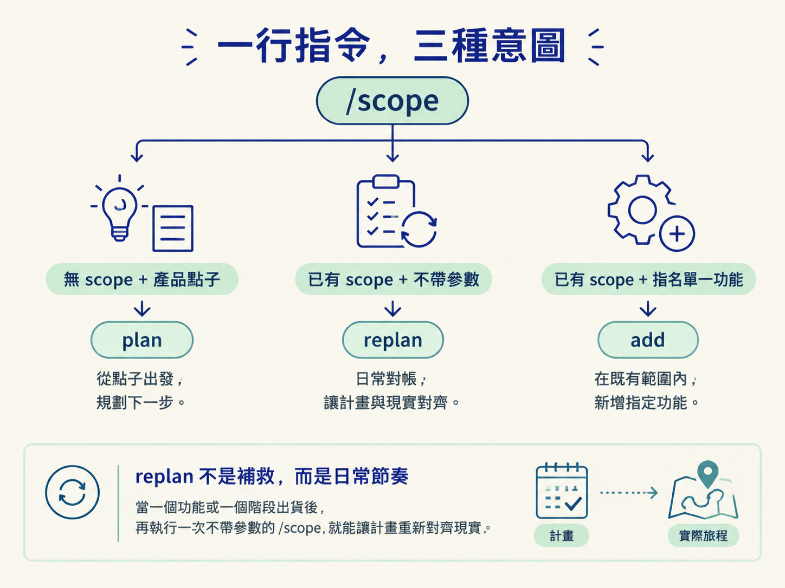
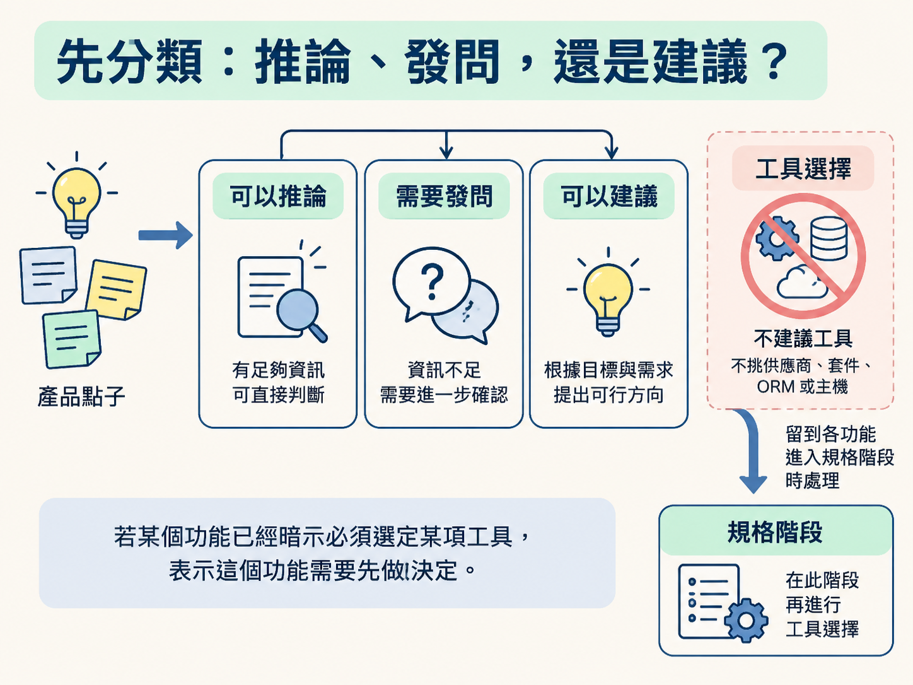
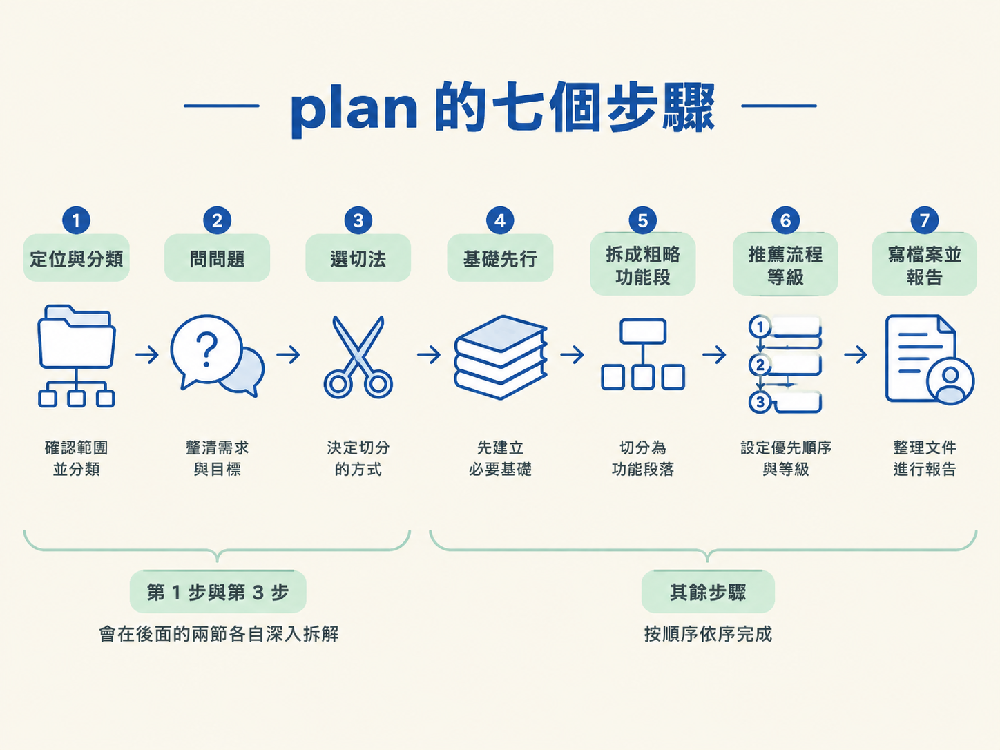
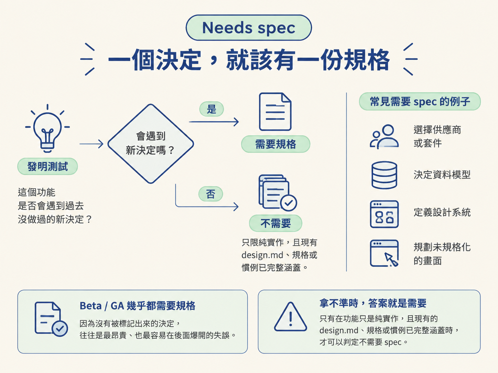

學完這一節，你會知道 `/scope` 如何根據目前的上下文，判斷自己要執行 plan、replan 或 add。你也能照著 plan 的順序，把一句產品點子拆成有先後次序、可以繼續執行的 feature 清單。
你打開 agent，輸入一行 `/scope`，按下 Enter。這時它該做什麼？是從零開始規劃一個新產品，還是先告訴你上次做到哪裡、接下來該做什麼？
同樣是 `/scope`，在不同狀態下，你期待的結果可能完全不同。許多工具會要求你明確輸入 `/scope plan` 或 `/scope replan`，用子指令把意圖說清楚。
jsm-skills 選擇了另一條路：指令本身不拆成多個子指令，而是讀取目前的上下文，推斷你現在真正需要的行為。這一節會先看它如何完成分類，再完整走過一次 plan 的七個步驟。
如果你還沒讀過上一節，也沒關係。先記住：scope 是放在 docs/scope/ 裡的活計畫，用兩段式方式記錄功能與目前狀態。
/scope 的形式固定是 /scope [你要做的事]，不使用子指令。它會根據三條規則，判斷這次應該做哪一件事。
| 你的處境 | 推斷出的意圖 | 它會做什麼 |
|---|---|---|
| 還沒有 scope，而且你給了一個產品規模的點子 | plan | 完整規劃一輪，從提問一路走到寫入檔案 |
| scope 已經存在，但你沒有提供其他內容 | replan | 先報告目前狀態，再對帳並排出下一片 |
| scope 已經存在，而且你指名一個單一功能 | add | 只把這個功能加入計畫，不重跑完整流程 |
最容易被忽略的是 replan。它不是出了問題才拿出來用的修理工具，而是日常節奏的一部分。當一個功能或一個階段出貨後，再執行一次不帶參數的 `/scope`，就能讓計畫重新對齊現實。

有時候，輸入的狀態不夠清楚。例如你只說了一句話，卻看不出那是在描述「下一片功能」，還是只想新增「一個功能」。這時它會檢查現有的 scope，選出最可能的解讀，並在報告中說明自己採用了哪一種。
如果真的無法判斷，它才會用一行問題向你確認。若你既沒有提供產品點子，也沒有既有 scope 可以延伸，它不會硬猜，而是停下來問：「你要做什麼？請用一兩句話描述這個產品，或你想規劃的那一片。」
正式提問之前，`/scope` 會先把已知資訊分成三類。這個分類會貫穿整輪規劃，避免 agent 把已經明白的事情再問一次，也避免把尚未決定的事情偷偷當成既定事實。
可以推論的，是點子本身已經講明，或從內容中顯而易見的事情，例如產品類別，以及產品自然需要的基本能力。這些不用再問。
需要發問的，是無法從點子推導出的商業、產品與上市考量。這些問題會一次整理成一批提出，而不是想到一個就問一個，讓你不必在零散問題之間來回切換。
可以建議的，是切法、建置順序、流程等級，以及哪些功能應該先做決定。agent 會提出判斷，但最後的決定權仍然在你手上。
有一件事它不會替你建議：工具。它不挑供應商、套件、ORM 或主機。工具選擇應該留到各功能進入規格階段時處理。如果某個功能已經暗示必須選定某項工具，那正是這個功能需要先做決定的訊號。

遇到需要你拍板的地方，`/scope` 不會只丟出一個「你覺得呢？」的中性問題，讓你從一片空白開始思考。它會整理成一張決策面板：提供二到四個符合這個產品情境的選項，其中恰好一個標示為 (recommended)，並附上一句推薦理由。
這樣做的目的不是替你奪走決定權，而是先把判斷工作做一輪。你可以直接接受推薦，也可以看完選項後改成另一個選擇。
它不會自行加上「其他」選項，因為選單本身會自動附帶自由輸入欄位。只有在純文字環境、無法使用選單時，它才會自己提供這個輸入方式。每一輪最多問四個問題，這一批答完後，才會進入下一輪。
當 `/scope` 判斷這次是 plan，完整規劃會按照以下順序進行。這就像先確認地圖，再決定路線，最後才把每一段路寫進行程表。
其中，第三步的切法與第一步的 repo 分類，會在後面的兩節各自深入拆解。這一節先把完整路線看清楚，避免只記住零散規則，卻不知道它們在流程中的位置。

另外，寫入前還會有一個關於參考來源的小型同意問題：是否要在檔案裡註明某個建議來自哪裡。預設是不加，讓檔案保持乾淨；如果你同意加入，也只會在適當位置附上具名來源與採用方式，不會捏造連結。
拆功能時，每個功能都要回答一個問題：它是否需要一份 spec？判斷方法可以稱為「發明測試」：如果真的要把這個功能做出來，是否會碰到一個過去還沒有做過的決定？
以下情況通常代表需要規格：要挑選供應商或套件、要決定資料模型、要選擇跨領域的做法、要定義設計系統、要替一整頁尚未規格化的畫面做決定，或是功能本身包含搜尋、篩選、推薦等不平凡行為。
只有在功能只是純實作，而且現有的 design.md、規格或既有慣例已經完整涵蓋它時，才可以判定不需要 spec。拿不準時，答案就是需要。處於 Beta 或 GA 等級的功能，幾乎總是需要規格，因為沒有被標記出來的決定，往往是最昂貴、也最容易在後面爆開的失誤。

還有一條重要規則：一份規格只處理一個決定。如果一個功能裡藏著好幾個不同決策，就應該拆成好幾個需要規格的功能，不要把它們全部塞進一份名為「策略」的規格。
如果幾個功能共同依賴一個大型決定，之後才各自分岔，可以建立一份總規格，讓它們引用。但不能因為已經有總規格，就把那些仍然帶有自身決定的功能標成「不用規格」。
`/scope` 沒有子指令，而是靠上下文推斷三種意圖：沒有 scope 且提供產品點子，就是 `plan`；已有 scope 且沒有提供參數，就是 `replan`；已有 scope 且指名單一功能，就是 `add`。整輪規劃遵守三個原則：能推論的就推論，推不出的資訊才分批提問，需要判斷的地方就提供恰好一個推薦選項。`plan` 會依序完成 repo 分類、提問、選切法、基礎先行、拆功能、推薦流程等級，以及寫檔與報告。拆功能時，用發明測試判斷是否需要規格；拿不準就判定需要，而且一份規格只處理一個決定。
七個步驟裡，第一步看似只是判斷 repo 的形狀，實際上卻會決定整輪規劃要採用哪一套劇本。下一節會把 greenfield、brownfield 與 monorepo 三種起手式拆開來看。